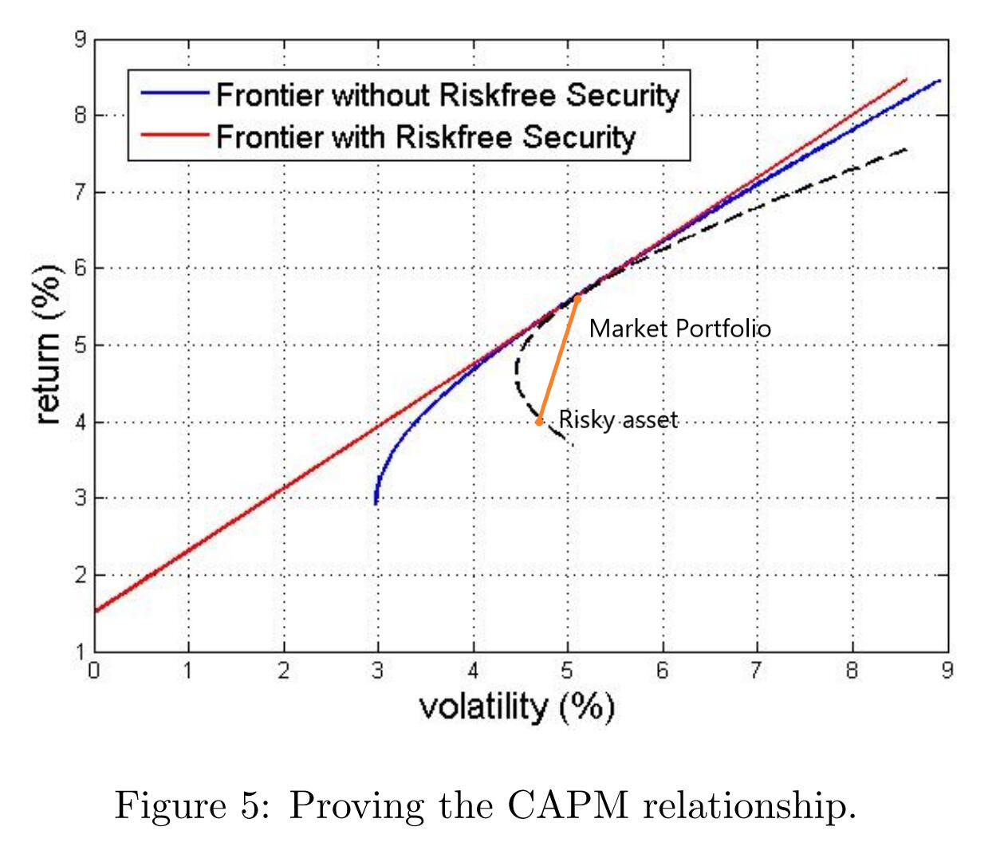

CAPM: the Capital Asset Pricing Model 资本资产定价模型
符号定义
市场组合： \(R_m, \sigma_{R_{m}}\)
某风险资产： risky asset: \(R, \sigma_R\)
由这两种资产构建的一个新的组合，下标 \(\alpha\)：
\[R_\alpha = \alpha \cdot R + (1-\alpha) \cdot R_m\]
\[E[R_\alpha] = \alpha \cdot \bar{R} + (1-\alpha) \cdot \bar{R}_m\]
\[\sigma^2_{R_{\alpha}} = \alpha^2 \sigma_R^2 + (1-\alpha)^2 \sigma_{R_m}^2 + 2\alpha(1-\alpha)\sigma_{R, R_m}\]
推导
首先需要强调，CAPM 假设全体投资者都了解市场组合的存在并持有，
定性的给出 \((\sigma_{R_\alpha}, E[R_\alpha])\) 的曲线：

随着 \(\alpha\) 变化，形成图中的虚线。
该曲线不能超过有效前沿曲线，因为这里选取的风险资产本身是有效前沿内部的一个点，市场组合是有效前沿上的点，两者的组合自然在有效前沿内部。
在推导有效前沿形状时，曾考虑一个最简单的两资产模型： - 如果这两个资产完全正相关，构成的组合在两点连成的线段上； - 完全负相关，则有效前沿形成一个 V 字形，最终在 y 轴上形成一个零风险但高于无风险利率的回报率； - 否则弯成一个二次曲线。
当 \(\alpha = 0\) 时该曲线应与 CML 切于市场组合点。根据该性质，推导该新组合和市场组合的关系。
\[\frac{\partial E[R_\alpha]}{\partial \sigma_{R_\alpha}} \bigg |_{\alpha = 0} = \left (\frac{dE[R_\alpha]}{d\alpha} \bigg / \frac{d\sigma_{R_\alpha}}{d\alpha} \right) \bigg|_{\alpha = 0}\]
分别求解分子分母，
\[\frac{dE[R_\alpha]}{d\alpha} = \bar{R} - \bar{R}_m\]
\[\frac{d\sigma_{R_\alpha}}{d\alpha} = \frac{d\sigma^2_{R_\alpha}}{d\alpha} \bigg/ 2\sigma_{R_\alpha} \]
\[\because \frac{d\sigma^2_{R_\alpha}}{d\alpha} = 2 \sigma_R^2 \alpha + \sigma_{R_m}^2(2\alpha-2) + 2\sigma_{R, R_m}\]
\[\therefore \frac{d\sigma_{R_\alpha}}{d\alpha} = \frac{2 \sigma_R^2 \alpha + \sigma_{R_m}^2(2\alpha-2) + 2\sigma_{R, R_m}} {2\sigma_{R_\alpha}}\]
当 \(\alpha = 0\)，新的组合就是原来的市场组合，\(R_\alpha \equiv R_m\)
\[\begin{aligned} \therefore \frac{d\sigma_{R_\alpha}}{d\alpha} \bigg|_{\alpha = 0} &= \frac{2 \sigma_R^2 \alpha + \sigma_{R_m}^2(2\alpha-2) + 2\sigma_{R, R_m}} {2\sigma_{R_\alpha}} \bigg|_{\alpha = 0} \\ &= \frac{-\sigma_{R_m}^2 + \sigma_{R, R_m}} {\sigma_{R_m}} \end{aligned}\]
综上，
\[\frac{\partial E[R_\alpha]}{\partial \sigma_{R_\alpha}} \bigg |_{\alpha = 0} = \frac{(\bar{R} - \bar{R}_m)\sigma_{R_m}}{-\sigma_{R_m}^2 + \sigma_{R, R_m}}\]
同时，资本市场线 CML 的斜率已知，
\[\frac{\bar{R}_m - r_f}{\sigma_{R_m}}\]
新组合曲线在市场组合这一点的斜率和 CML 相等，
\[\therefore \frac{(\bar{R} - \bar{R}_m)\sigma_{R_m}}{-\sigma_{R_m}^2 + \sigma_{R, R_m}} = \frac{\bar{R}_m - r_f}{\sigma_{R_m}}\]
\[\bar{R} - \bar{R}_m = \frac{-\sigma_{R_m}^2 + \sigma_{R, R_m}}{\sigma_{R_m}^2}(\bar{R}_m - r_f)\]
\[\bar{R} - r_f = \frac{\sigma_{R, R_m}}{\sigma_{R_m}^2}(\bar{R}_m - r_f) = \beta (\bar{R}_m - r_f) \]
其中 \(\beta = \frac{\sigma_{R, R_m}}{\sigma_{R_m}^2}\)。